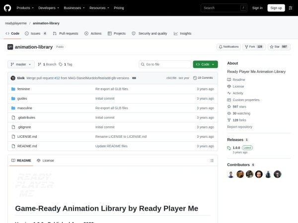

歷史參考｜Ready Player Me 的 200 多組免費遊戲動捕動畫
2023 年 Ready Player Me 公開首批 200 多組遊戲動畫，涵蓋移動、待機、表情與舞蹈，已重定向到其男性與女性角色骨架；可用於自製角色，但仍須依附帶授權使用。

動畫 ★★★☆☆
完整分析
角色動畫流程
素材來自專業動捕工作室的男性與女性演員，並已重定向到 Ready Player Me 的角色骨架；資料按動畫類別整理，另附 GIF 預覽，可先檢視動作內容再匯入製作軟體。
製作交接價值
資料採 FBX，可交由支援此格式的 Unity、Unreal Engine、Blender 或 Maya 使用；原文也允許在自創角色上使用，因此不限定只能配合 Ready Player Me 的外觀資產。
歷史版本限制
這是 2023 年首批動畫的紀錄，武器動畫當時尚未推出。既有動作雖可用於自創角色，但原始重定向目標仍是 Ready Player Me 專用骨架，不能推定其他骨架可免調整直接套用；使用範圍需核對素材授權。
BRIEF｜來源已驗證；證據深度較有限，完整分析會明確區分已知資訊與待驗證事項。